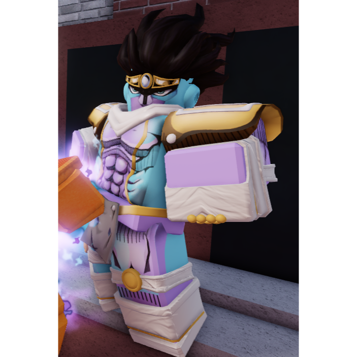
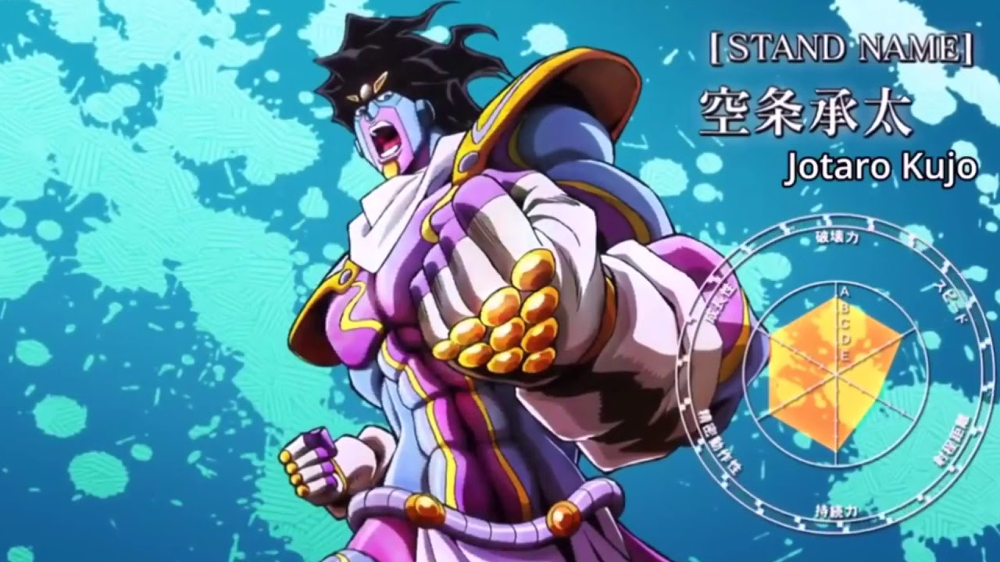

Esta version de Star Platinium es diferente a la que no obtiene el Requiem ya que en su forma requiem este obtiene mucho mas daño y la capacidad de parar el tiempo por 5 segundos, mucho mas tiempo que el Star Platnium No Requiem , las desventajas que este tiene es que su velocidad de ataque baja ligeramente comparada a la del No Requiem este no es apto para combos ya que este tumba al usuario al final de cada habilidad, pero se le añaden habilidades que pueden bajar tanto daño como si fuera toda la vida del jugador y por su habilidad de parar el tiempo este ya no necesita de habilidad ya que solo con parar el timpo puedes bajarle toda la vida al enemigo por que da tiempo de sobra para hacerlo


Habilidades
LMB - Puñetazo: este movimiento corto con un tiempo de reutilización corto que inflige 10,1 de daño con el máximo poder destructivo y puede combinarse 5 veces, en última instancia, inflige 50,5 de daño si todos los golpes golpean (12,6 con Hamon, 11,6 con Precisión de combate, 14,5 con ambos, causando masivamente 72,5 daño.)
E - Stand Barrage: SP:TW se mueve frente al usuario para lanzar una ráfaga de golpes rápidos mientras dice "Ora". (1,7 daños por golpe con el máximo poder destructivo).
R - Barrage Finisher: SP:TW se mueve frente al usuario y lanza un fuerte golpe ORA. (20,1 de daño con el máximo poder destructivo).
T - Platinum Slam: SP:TW rompe el suelo, inflige daño AoE y un retroceso increíble, aplastando a cualquiera que golpee. Esto hace alrededor de 24,4 de daño y tiene un tiempo de reutilización de 25 segundos. Este movimiento rompe bloques y se puede parar (¡NOTA!: UTILICE ESTE MOVIMIENTO SOLO CUANDO EL ENEMIGO ESTÉ CON LA GUARDIA DESPRENDIDA).
Y - Skull Crusher: si el cursor del mouse está sobre alguien, SP:TW detendrá el tiempo detrás de ellos y lanzará un puñetazo hacia su cabeza, aplastando su cráneo. Cualquier persona que sea golpeada con este movimiento puede resultar dañada mientras es manipulada. Esto tiene un tiempo de reutilización de 30 segundos y se puede bloquear. (22,5 de daño con el máximo poder destructivo).
H - The World: SP:TW detiene el tiempo por un corto período de tiempo y, a diferencia de su forma no evolucionada, Star Platinum, no requiere un medidor de ira. Esto tiene un tiempo de reutilización de 1 minuto y 10 segundos. Cada actualización agrega alrededor de 1 segundo a la parada de tiempo, y el máximo es de 8 segundos. También tiene un límite de daño del 50%.
J - Precisión de combate: similar al modo Rage, Combat Precision es un beneficio propio, excepto que no requiere una barra de ira. Este movimiento es similar al Awakening de Gold Experience Requiem. SP:TW grita "¡ORAAA!" y sus ojos comienzan a brillar de color azul claro mientras suena el tema de Jotaro/Stardust Crusaders. Durante este estado, no puedes quedar bloqueado y, mientras bloqueas, todos los ataques que se pueden bloquear perfectamente se bloquearán automáticamente. Además, tu velocidad al caminar aumenta y tu daño se mejora en un 15 %. Tras la activación, el usuario recuperará unos 25 HP. En la actualización máxima, este movimiento dura alrededor de 52 segundos, o 30,2 segundos sin actualizaciones. Esto tiene un tiempo de reutilización de 3 minutos y 40 segundos.
C - Ora Beatdown: SP:TW lanzará un puñetazo, similar a un puñetazo fuerte, que inflige 20,1 daños. Tras lo cual, realizará otro golpe para 20.1 y luego agarrará al oponente por el cuello. Luego, el jugador dice la línea de la firma de Jotaro, "Yare Yare Daze" (buen dolor), y luego SP: TW golpeará dos veces, cada una de las cuales inflige 10.1 dmg cada una. Por último, bombardeará al oponente por 1.3 dmg por golpe y lo terminará con un golpe que se escala con la cantidad de salud que le queda a tu oponente (hace más daño contra jugadores de menor HP). El tema de Jotaro se reproduce durante toda la paliza, que dura unos 10 segundos e inflige alrededor de 105 de daño en total (amplificado con beneficios como Combat Precision y Hamon), lo que agota una parte significativa de tu barra de salud. Este movimiento se puede parar. Este es un movimiento de ejecución.
X - Ora Kicks: Star Platinum: The World envía una ráfaga de patadas de alto daño que se pueden mejorar para tener mayor daño y velocidad. Este movimiento también se comparte con Star Platinum: la forma original del mundo: Star Platinum. Ora Kicks inflige 2,9 de daño (por patada), 13,4 de daño (patada final) con el máximo poder destructivo. Con la máxima velocidad de soporte, este movimiento sale casi instantáneamente y es difícil de detener, por lo que es una opción de daño muy confiable.
Z - Salto de tiempo: SP:TW usa su capacidad de detener el tiempo para teletransportarse una buena distancia a donde sea que apunte el mouse. Esto tiene un tiempo de reutilización de 10 segundos.